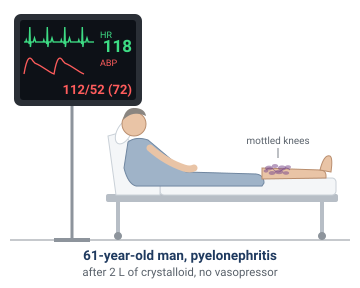
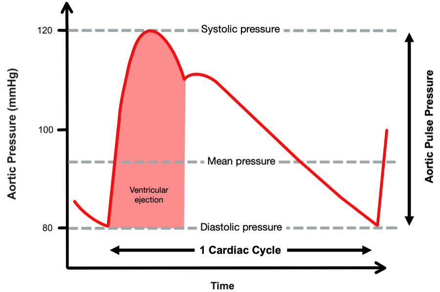
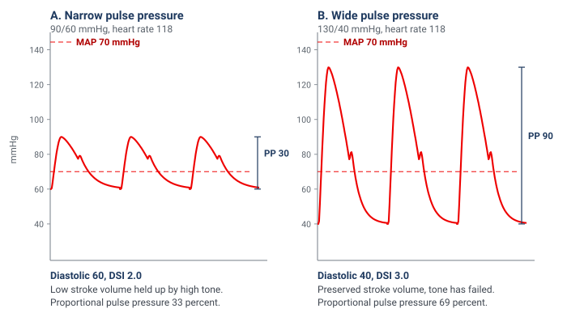
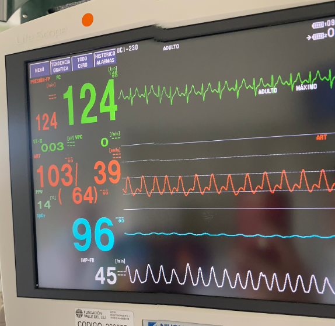
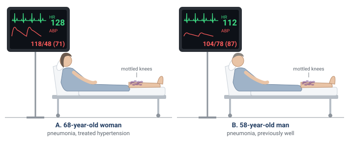

Module C2
At the bedside: normotensive shock, pulse pressure, and hemodynamic phenotype
A 61-year-old man is admitted to the intensive care unit from the emergency department with pyelonephritis. He has received two liters of crystalloid. His blood pressure is 112/52 mmHg, a mean of 72, with a heart rate of 118. His lactate is 4.6 mmol/L, his capillary refill time is five seconds, there is mottling over both knees, and he has made 15 mL of urine in the last hour. The handover from the emergency team is that his pressure is fine and he did not need a vasopressor.

This patient case offers an excellent opportunity to remind us of three key concepts related to the relationship between shock and blood pressure, which we will unpack in this module.
Shock is a statement about oxygen use and not about blood pressure. We initially covered this in Module N1 (opens in a new tab) and then capitalized on this throughout the remainder of the Novice slides.
A cuff or an arterial line gives you a systolic pressure, a diastolic pressure, and a mean. In clinical practice, we collapse this into a single number: the mean arterial pressure (MAP). The resuscitation target is usually a MAP of approximately 60 to 65 mmHg. However, the discarded elements here, including the pulse pressure, the systolic pressure and the diastolic pressure, are not redundant restatements of the mean. They are independent physiologic signals.
An etiologic diagnosis and a hemodynamic phenotype are different: two patients with the same diagnosis can present with very different hemodynamic phenotypes. In the last module, we reviewed the equation below, which ties the hemodynamic phenotypes together and which Module N3 (opens in a new tab) first derived.
A mean arterial pressure is not defined by flow or tone alone. It is produced by contributions from both, and an infinite number of combinations of cardiac output and vascular resistance produce any given MAP, ranging from a healthy circulation to a dying one. Although the MAP still dictates, in most ICUs, whether a patient is considered to be in shock, relying on a MAP alone to determine a hemodynamic state attempts to solve one equation with two unknowns.
Shock with a blood pressure that looks acceptable
Shock is a state in which observed oxygen consumption is insufficient for what the body requires, whether because delivery has failed or because the tissues cannot use what arrives. Nothing in that definition mentions arterial pressure.
Whether the presence of hypotension matters has been answered empirically. Puskarich and colleagues took a multicentre trial of early sepsis resuscitation and split its 300 subjects into those enrolled with a lactate of 4 mmol/L or more while normotensive, which they called cryptic shock, and those enrolled with sustained hypotension after a fluid challenge, called overt shock. There were 53 and 247 patients in each arm respectively, with similar baseline characteristics. In-hospital mortality was 11 of 53, 20% (95% CI 11-34), against 48 of 247, 19% (95% CI 15-25). The analysis was novel in suggesting that a patient whose only abnormality is a lactate of 4 mmol/L, despite a normal blood pressure, dies at the same rate as a patient with persistent hypotension.
Why the Novice grid cannot show you this patient
Every column of the shock-type grid below, first introduced in Module N5 (opens in a new tab), cardiac, obstructive, distributive and hypovolemic, carries a downward arrow under MAP. That is not an error. The grid was created as a quick, approximate way to describe the majority of patients with shock. A deeper understanding of the grid recognizes that it is not comprehensive and is limited to a table of population averages. It is also important to recognize that the grid offers an explanation of the type of shock a patient might have, but does not explain why that type of shock occurred. For example, a patient who presents with sepsis does not always present in distributive shock. They may present with a stress cardiomyopathy, an acutely strained right ventricle, or in a profoundly underfilled state.
| Shock type | MAP | CO | RAP | PAPm | LAP | SVR |
|---|---|---|---|---|---|---|
| Cardiac (LV) | ↓ | ↓ | ↑ | ↔/↑ | ↑ | ↑ |
| Obstructive (RV) | ↓ | ↓ | ↑ | ↑ | ↔ | ↑ |
| Distributive | ↓ | ↔/↑ | ↓ | ↔ | ↔ | ↓ |
| Hypovolemic | ↓ | ↓ | ↓ | ↔ | ↔ | ↑ |
Three routes to a (falsely?) reassuring pressure
Compensation. Cardiac output falls, systemic vascular resistance rises to meet it, and the product is preserved. This is why a young patient can lose a large fraction of their blood volume with a normal blood pressure, and why a patient with early cardiogenic shock presentation can be normotensive. The tell is a narrow pulse pressure, because the stroke volume has fallen even though the mean has not.
Relative hypotension. The pressure is normal for the population and abnormal for this patient. A chronically hypertensive 70-year-old whose usual pressure is 165/90 has a habitual mean near 115 mmHg, and every autoregulatory curve in their body has been rebuilt around it, so a MAP of 70 mmHg is a 40 percent reduction in perfusion pressure. The history tells you the baseline, the item most reliably missing from a handover. The tell at the bedside is the diastolic pressure. Arteries stiffened by years of hypertension usually carry a wide pulse pressure, but the reflexes that defend a falling pressure raise arteriolar tone, and tone is what holds the diastolic pressure up. If this patient now reads 118/46, the diastolic pressure has fallen by roughly half while the systolic pressure has fallen by about a quarter. The mean of 70 looks acceptable, but the collapse sits almost entirely in the diastolic pressure, and that points at a failure of arteriolar tone rather than at a circulation that is simply running at a lower setting. Read against the history, a diastolic pressure that has fallen out of proportion to the systolic is the sign that a normal-looking mean is not normal for this patient.
Macrocirculatory to microcirculatory uncoupling. The pressure is adequate, the total flow is adequate, and the blood is still not reaching the cells. Oxygen leaves the blood in the capillary beds, and a normal flow into an organ says nothing about how that flow is distributed within it. In sepsis, capillaries that are plugged or intermittently stopped sit alongside capillaries carrying fast flow, so blood takes the open paths, passes through too quickly to unload, and returns to the heart still saturated. The organ is bathed in flow and starved of oxygen. Raising the pressure does not reopen the stopped units, because they are obstructed rather than underperfused, and the vasoconstriction that raises it can close more of them. The tell is the perfusion examination rather than the monitor: mottling, a prolonged capillary refill time, and a lactate that will not clear. From the end of the bed all three patients look alike, but they are separated by the pulse pressure, the diastolic pressure and the perfusion markers rather than by the mean.
Pulse pressure: the flow signal inside the blood pressure
Systolic and diastolic pressures are the peak and trough of one cardiac cycle. The mean is neither their average nor, strictly, the one-third rule: monitors compute it as the area under the pressure waveform divided by the cycle duration. The conventional calculation of diastolic pressure plus a third of the pulse pressure agrees with the integrated form of calculating MAP only when the waveform is of ordinary shape.

Why that difference should report stroke volume is worth stating even though the derivation belongs to Module C4 (opens in a new tab). Over one beat the ventricle delivers a bolus of blood into an arterial compartment that is already full and draining continuously through the arterioles. Pressure rises by roughly the volume added divided by the compliance of the compartment, then falls as the compartment empties in diastole. Hold arterial compliance and the runoff constant and the pulse pressure is proportional to the volume delivered. Under those conditions, the Windkessel behavior of the great arteries allows us to use pulse pressure as a surrogate for stroke volume. We cover the Windkessel in greater detail in Module C4 (opens in a new tab), but a conceptual understanding of pulse pressure already adds diagnostic insight at the bedside of a patient in shock.
The narrow pulse pressure
In a patient with normal arteries, a narrow pulse pressure usually means a small stroke volume. Stevenson and Perloff studied this and found that proportional pulse pressure, the pulse pressure expressed as a percentage of the systolic pressure, correlated with cardiac index very well. A value below 25 percent identified a cardiac index below 2.2 L/min/m2 with 91 percent sensitivity and 83 percent specificity.
For example, a pressure of 150/120 mmHg and a pressure of 90/60 mmHg share an absolute pulse pressure of 30, but the first represents a low-output finding, with a proportional pulse pressure of 20 percent against 33 percent for the second patient. The reason this works lies in what a pulse pressure actually measures. The pulse pressure is roughly the stroke volume divided by the compliance of the arterial compartment, so reading it requires knowing what compliance you are dividing by, and the systolic pressure is the available proxy. Arteries operating at 150 mmHg are likely to be stiff, and a stiff compartment turns a normal stroke volume into a large pressure swing. A pressure swing of only 30 mmHg in that patient means the overall distention of the vessel (i.e., the output) must be small. At a systolic of 90 the compartment is more compliant, and 30 mmHg is close to what a normal stroke volume produces there. Convertino and colleagues showed the same relationship experimentally: during progressive central hypovolemia induced by graded lower body negative pressure in healthy volunteers, pulse pressure fell in step with a falling stroke volume as sympathetic nerve activity rose, tracking the reduction in stroke volume closely (r2 = 0.91).
The wide pulse pressure
A wide pulse pressure is the harder sign to interpret, because it has several potential causes that call for different actions. The first is a large stroke volume delivered into a normal or vasodilated arterial tree: the hyperdynamic circulation of sepsis, decompensated cirrhosis, thyrotoxicosis, severe anaemia and large arteriovenous shunts, where the sign genuinely reports a high output. The second is a normal stroke volume delivered into a stiff arterial tree, the elderly hypertensive whose large arteries have lost compliance. Since PP is approximately stroke volume divided by arterial compliance, the same stroke volume produces a much larger excursion because the denominator has shrunk. Aortic regurgitation is a third category, in which the diastolic pressure is low because blood is running backwards into the ventricle rather than forwards into the tissues, so the sign substantially overstates forward flow.
| Finding | Mechanism | What it is telling you | Where it can mislead |
|---|---|---|---|
| Narrow pulse pressure | Small stroke volume, arterial compliance normal | Low cardiac output, from hypovolemia or from pump failure | Silent on which of the two, so the venous side is what separates them |
| Wide, with a low diastolic | High stroke volume into a vasodilated tree, fast diastolic runoff | Hyperdynamic vasoplegic circulation | Wide is not the same as adequate, since a high output can still be insufficient for a raised demand |
| Wide, high systolic | Reduced total arterial compliance and earlier systolic wave reflection | Stiff arteries, a chronic finding | Reads as high stroke volume when stroke volume may be normal or low. |
| Wide, with a collapsing quality | Diastolic runoff back into the ventricle | Aortic regurgitation | Overstates forward flow, sometimes grossly |

Diastolic pressure and the diastolic shock index
If pulse pressure is the flow signal hiding in the blood pressure, diastolic pressure is the tone signal, and it is the more neglected. The reason it reports tone has to do with where the pressure spends its time. At an ordinary heart rate, roughly two thirds of the cardiac cycle is spent in diastole. During this time, the ventricle contributes nothing and arterial pressure decays from its peak as the Windkessel discharges blood toward the peripheral vessels. Where that decay is arrested when the next beat arrives is set by the rate of emptying. The rate of emptying is governed substantially by arteriolar tone and arterial compliance, and the time available for it is set by the heart rate. Stroke volume enters only weakly, and only when profoundly reduced.
That produces a pattern worth noting. In hemorrhagic, cardiogenic and obstructive shock the sympathetic response raises peripheral resistance and heart rate together, both of which defend the diastolic pressure. The first defends diastolic pressure by slowing runoff and the second by shortening the time available for it. A low-output state with intact compensation therefore shows a preserved or elevated diastolic pressure with a narrow pulse pressure on top of it. In distributive shock the compensation fails at the arteriole. Runoff is fast, and although the rate rises and shortens diastole, that alone cannot hold the pressure up, so the diastolic pressure falls despite the tachycardia. That anomaly is what the diastolic shock index detects.
The index and the evidence behind it
Ospina-Tascón and colleagues computed the index just before vasopressors were started in two cohorts of patients presenting with septic shock. Risk rose progressively as the DSI rose in both cohorts.
What is most interesting is that the finding was attributed to the interplay between both physiologic variables, not to any singular variable alone. A progressive fall in diastolic pressure, or a progressive rise in heart rate, carried higher mortality only when the ratio rose as well. The signal of rising mortality risk is the divergence of diastolic pressure and heart rate. The study deliberately declined to publish a universal cutoff, because the design had no control group against which one could be defined. But an exploratory analysis by the investigators, which is not part of the published report, places the inflection somewhere near 2.2.

What DSI identifies that the MAP does not
Take a close look at the monitor above. A mean arterial pressure of 64 is a borderline number that would prompt a shrug in most units, particularly in a patient not yet on a vasopressor. It is being produced by a systolic pressure of 103 in a circulation whose diastolic pressure has fallen to 39. In this patient, the mean is holding up because the product of cardiac output and resistance is being sustained by an output that has risen, not by a resistance that is intact. If the output stops rising, the mean falls off a cliff, because there is no vascular tone underneath it. In cases like this, the mean is often a lagging indicator of vasoplegia precisely because of the compensatory mechanisms that defend it. Taking note of those can identify a patient who is at higher risk of mortality.
From an index to an intervention
Three developments have moved the diastolic pressure and DSI from unnecessary observations to something that has the potential to change care. The first is recognizing that the DSI can help identify patients with septic shock who are at higher risk of mortality. The second adds the dose of the drug holding the pressure up, since a diastolic pressure of 55 on no vasopressor and the same pressure on 0.6 mcg/kg/min describe entirely different vasculatures.
The third is the intervention. Ospina-Tascón's exploratory observation was that very early vasopressor initiation appeared to benefit patients in the highest pre-vasopressor quintile. The premise here is that in patients with shock, the DSI may help guide therapy. A similar framework was built into the ANDROMEDA-SHOCK-2 trial. The intervention in this trial was a personalised hemodynamic resuscitation protocol targeting capillary refill time, whose first tier was a phenotyping step performed with nothing but the arterial pressure. Patients with a pulse pressure below 40 mmHg were assessed for fluid responsiveness. Patients with a pulse pressure of 40 mmHg or higher and a simultaneous diastolic pressure below 50 mmHg had norepinephrine titrated to a diastolic pressure of 50 mmHg or higher. The trial met its primary endpoint, a hierarchical composite of mortality, duration of vital support and length of hospital stay, driven mainly by shorter vital support. The algorithm emphasizes the point: a narrow pulse pressure sends you toward hypovolemia or pump failure, and a wide pulse pressure with a collapsed diastolic pressure sends you toward tone. Both scenarios may present with a similar MAP, and the pulse pressure and diastolic pressure are what give you insight into which shock the patient has.
Etiology is not phenotype
We often talk about shock in terms of its etiology, and terms such as septic shock are common. It is important to remember that an etiologic diagnosis names the insult: pneumonia, pancreatitis, a bleeding ulcer, a large anterior infarct. A hemodynamic phenotype names the state the circulation is in right now: which interfaces are uncoupled, whether flow is high or low, whether tone has failed, whether the venous side is congested. An insult tends to produce a characteristic circulation, but the relation is a tendency, not an identity, and treatment follows the phenotype.
One diagnosis, five circulations
A great demonstration of this was published by Geri and colleagues. They merged two prospective databases from twelve intensive care units in which transoesophageal echocardiography had been performed in patients presenting with septic shock. Five cardiovascular phenotypes emerged: (a) no ventricular dysfunction and no fluid responsiveness, (b) left ventricular systolic dysfunction, (c) hyperkinetic profile, (d) right ventricular failure, and (e) persistent hypovolemia.
Two features deserve emphasis here. The first is the spread: the hyperkinetic profile (the one this curriculum defined as “distributive shock”) accounted for fewer than a quarter of patients. The second is what the phenotype predicted. Day 7 mortality between groups ranged from 8 percent to 33 percent, suggesting that the phenotype not only matters as a guide to how best to resuscitate the patient, but may be prognostic as well.
Phenotyping quickly, before the numbers arrive
A major challenge with phenotyping is how to do it efficiently. In the first fifteen minutes there is often no echocardiogram, no cardiac output measurement and no arterial line, and a decision has to be made. No new framework is needed for that moment. The Novice pathway already supplies one, and phenotyping at this level means running that same framework with deeper physiologic insights rather than replacing it. The sequence is the one taught in Modules N3 (opens in a new tab) through N6.
The B.U.S. screen comes first (Module N3 (opens in a new tab)). Brain, urine and skin, supported by the lactate, establish whether perfusion is failing, and they do so regardless of what the pressure reads. Assessment of tone, filling and flow (Module N6 (opens in a new tab)) then helps confirm the shock phenotype. This can be characterized at almost any bedside. In this circumstance, the MAP column is set aside because, as this module has shown, it can look deceivingly acceptable. What this module adds is better readings for those columns, not new columns.
- Tone (SVR). Module N6 reads tone from the diastolic pressure, skin temperature, mottling and capillary refill time. This module sharpens the first of those with the DSI.
- Filling (RAP). The arterial tracing does not directly inform RAP. Therefore, it should be examined separately, through jugular venous distension or a central venous pressure, as taught in Module N6.
- Flow (CO). Echo VTI, thermodilution or Fick inform flow when they are available. Until then the pulse pressure is the entry-level surrogate, read within the limits set out above.
The pattern across these three parameters generates a broad statement about physiology rather than creating a label to memorize. Low tone and low filling with preserved flow predict a venous return curve that shifts left as Pms falls and steepens as venous resistance falls, with a cardiac function curve lifted by the catecholamine response. Low flow with low filling and high tone predicts a venous return curve shifted left by lost stressed volume, and so a lower Pms, a failure of the venous reservoir at Interface III. Low flow with high filling and high tone predicts a cardiac function curve that has moved down, with the failure at Interface I in the cardiac row or at Interface IV in the obstructive row. The curves also say what the next intervention should test. A fluid bolus or a vasopressor raises Pms and slides the venous return curve right, an inotrope lifts the cardiac function curve, and the gain in output depends on whether the operating point sits on the steep or the flat part of the cardiac function curve.
A related tool is worth knowing because of where it departs from this framework. Adapted by Kenny and colleagues from Forrester's 1977 classification of post-infarction patients by cardiac index and wedge pressure, it reduces the problem to two axes that can be filled in with whatever is available. Those axes are the flow and filling columns of the grid, so most of it is already familiar.
![A two-axis diagram. The vertical axis is forward flow, labelled with surrogates including pulse pressure, LVOT VTI and corrected flow time, running from low to normal. The horizontal axis is venous congestion, labelled with CVP or surrogates including VExUS, femoral or jugular Doppler and IVC size, running from low to elevated. Four numbered quadrants are shown, named warm and dry, warm and wet, cold and dry, and cold and wet, with arrows marking four dynamic phenotypes described as tolerant or intolerant and responsive or unresponsive.](img/i2-forrester-kenny-quadrants.png)
Three of the four quadrants map directly onto the grid: cold and wet holds both the cardiac and the obstructive rows, cold and dry is the hypovolemic row, and warm and dry is the distributive row. The diagram contrasts with the Novice framework in one respect and adds to it in another. The contrast is that it has no tone axis, so the diastolic pressure and the DSI have nowhere to be recorded, and a low-output patient with failed tone shares a quadrant with one defended by vasoconstriction. The words warm and cold also need care: Module N6 lists skin temperature as a tone finding, while here it stands in for flow. The addition is the separation of responsiveness from tolerance. Module N5 (opens in a new tab) asks whether the operating point sits on the steep or the flat part of the cardiac function curve. The diagram adds a further question, which is what the resulting rise in RAP will cost, since RAP is also the backpressure opposing venous return. Low flow without congestion is the setting in which a patient is most likely to be fluid responsive and, if responsiveness is confirmed, volume expansion is often the most appropriate way to increase cardiac output. Low flow with congestion is the most concerning combination: a bolus may still increase cardiac output, but it also carries the greatest risk of worsening congestion, so the potential benefit should be weighed carefully against the risk of harm. The diagram is an initial orientation rather than a substitute for the A.C.T. algorithm proposed in the Novice modules (Module N6 (opens in a new tab)) and the interface-by-interface assessment that Module C1 (opens in a new tab) set out. A quick read by either route completes only the Assess and Create a hypothesis steps of that loop. The Test step still needs to be pursued: choose the one parameter that best separates the working row from its rivals, measure it, and feed the result back into the next “Assess” cycle. A structured approach of this kind keeps resuscitative measures helpful, and avoids reflexive behavior or continuing a resuscitation that was initially useful but has become harmful. The table below names the phenotypes of five familiar diagnoses in those same terms.
| Same diagnosis | Phenotype A | Phenotype B | What separates them at the bedside |
|---|---|---|---|
| Pneumonia with sepsis | Distributive row: low tone, preserved or high flow, with a high stroke volume | Cardiac row: low flow with a low stroke volume, from septic cardiomyopathy | Flow and tone: wide versus narrow pulse pressure, and the diastolic pressure |
| Acute pancreatitis | Hypovolemic row: low filling, low flow, high tone, from third-space loss | Low flow from venous return impeded at Interface III by intra-abdominal hypertension, with a RAP that can read high | Filling, read with the abdominal pressure, and the response to a leg raise (see Module C8 (opens in a new tab)) |
| Large anterior infarct | Cardiac row: high filling, low flow, high tone | Low filling, low flow, high tone: the hypovolemic pattern in a patient with an infarct | Filling: a congestion assessment to guide volume loading needs |
| Pulmonary embolism | Obstructive row, compensated: high filling, with high tone holding the MAP | Obstructive row, decompensated: high filling, low flow, low MAP | Flow, and right ventricular assessment (see Module C9 (opens in a new tab)) |
| Cirrhosis with infection | Distributive row: baseline low tone plus sepsis, relative central hypovolemia | Superimposed cardiac dysfunction: flow lower than the low tone would predict | Tone, read against the patient's own baseline pressure, and flow from the pulse pressure |
Every diagnosis presented above has more than one plausible phenotype. That is why we assess a patient's phenotype as part of our standard shock assessment, even when the diagnosis is well known, and it is why the rest of the Core pathway is organized by interface rather than by disease.
Occult and compensated shock, and what gives it away
Compensated shock is a state in which the reflexes are succeeding at defending arterial pressure and failing to defend tissue perfusion. It is the normal early behavior of the circulation, not an unusual variant. Why the pressure is the last thing to go follows from the arithmetic again. The baroreflex defends pressure and not flow, because pressure is what it can sense, and it does so by raising resistance, raising heart rate and shifting unstressed volume into the stressed compartment. The first of those actively reduces flow to the beds it constricts, and the splanchnic and cutaneous circulations are sacrificed first, which is exactly why the skin is a window: mottling and a prolonged capillary refill time are the visible evidence of the mechanism holding the blood pressure up. By the time the MAP falls, the reflex reserve is exhausted, which is very late.
The markers, used as evidence rather than as tools
Module C11 (opens in a new tab) works through what each perfusion marker measures and where each fails. What matters here is how they behave in the normotensive patient.
- Lactate. In a normotensive patient a lactate of 4 mmol/L is not a corroborating detail, it is the finding. Its weakness is a slow time constant, so a normal early value does not exclude the state.
- Capillary refill time and mottling. Refill is fast enough to test an intervention within minutes rather than hours. Mottling, as a marker of perfusion defects, is independent of vasopressor dose, which is exactly what makes it useful when the pressure looks adequate.
- Central venous oxygen saturation and the venous-to-arterial carbon dioxide gap. The pair matters more than either value alone, and the informative combination in a normotensive patient is a reassuring arterial saturation with a widened gap, which points at inadequate or maldistributed flow rather than at inadequate delivery.
The combination that should end a conversation is a normal-looking mean arterial pressure with a prolonged capillary refill time, mottling, a raised lactate and an elevated venous-to-arterial CO2 gap. There is no reading of that in which the circulation is adequate. In this scenario, the only question left is what the shock phenotype is.
Assembling a phenotype: two patients, one diagnosis

Two patients are admitted the same evening with community-acquired pneumonia and a lactate just above 4 mmol/L. Both have a capillary refill time of five seconds and mottling over both knees despite having received two liters of crystalloid. Neither is on a vasopressor because neither is hypotensive by the usual criterion.
The first is 68 years old with treated hypertension whose clinic pressures run around 160/85 mmHg. Her pressure now is 118/48 mmHg (MAP 71) with a heart rate of 128. The pulse pressure is 70 mmHg, proportionally 59 percent of the systolic, which is wide, and the DSI is 128 divided by 48, which is 2.7. Her habitual mean is about 110, so she is running at roughly two thirds of the pressure her organs are built for. Using these indices, the most likely phenotype is vasoplegia. This is supported by the wide pulse pressure and low diastolic pressure, as well as by the elevated DSI. Without an echocardiogram or any other intervention, the bedside hemodynamics already offer a working hypothesis. Testing that hypothesis with the A.C.T. algorithm, and confirming it with additional data, can proceed alongside the initial resuscitation.
The second patient is 58 years old, previously well, with outpatient clinic blood pressures around 125/75. His pressure now is 104/78 mmHg (MAP 87) with a heart rate of 112. On a quick look at the MAP alone, this patient appears stable. But the pulse pressure is 26 mmHg, and the proportional pulse pressure is 25 percent. The DSI is 1.4 (112 divided by 78). In this patient, the diastolic pressure has been defended by arteriolar vasoconstriction and tachycardia, but note how small the pulse pressure is. The phenotype correlates well with a low stroke volume state, masked by intense vasoconstriction. The next question is whether this patient, despite having sepsis, is presenting with a phenotype of hypovolemia or of septic cardiomyopathy. The A.C.T. algorithm would suggest assessing preload responsiveness or obtaining an echocardiogram as the next step. The wrong move is to be reassured by the MAP of 87 mmHg.
These two patients presented with the same diagnosis, the same elevated lactate and the same skin findings suggesting hypoperfusion. One needs tone and the other needs flow. Both are clearly in shock despite having a MAP above the conventional “threshold” of 65 mmHg. Almost everything needed to distinguish them was on the monitor from the first minute, in the two numbers between which the mean was calculated.
In the scenarios above, everything assumes the arterial waveform tracing is telling the truth. It is not always. A pulse pressure is an amplitude, and amplitude can be distorted in a transducer system. An underdamped line inflates the very sign this module has spent its length interpreting. Module C3 (opens in a new tab) takes that up next and establishes how to know whether the waveform in front of you is real before you reason from its shape. After that the pathway turns to the four interfaces in order, beginning with Module C4 (opens in a new tab), which supplies the mechanism behind the signs used here: why the arterial system behaves as a Windkessel, why systolic and diastolic pressure do not move together, and what sets the size of the excursion between them.
References
- Singer M, Deutschman CS, Seymour CW, Shankar-Hari M, Annane D, Bauer M, Bellomo R, Bernard GR, Chiche JD, Coopersmith CM, Hotchkiss RS, Levy MM, Marshall JC, Martin GS, Opal SM, Rubenfeld GD, van der Poll T, Vincent JL, Angus DC. The Third International Consensus Definitions for Sepsis and Septic Shock (Sepsis-3). JAMA. 2016;315(8):801-810. doi:10.1001/jama.2016.0287. Free full text.
- Puskarich MA, Trzeciak S, Shapiro NI, Heffner AC, Kline JA, Jones AE; Emergency Medicine Shock Research Network (EMSHOCKNET). Outcomes of patients undergoing early sepsis resuscitation for cryptic shock compared with overt shock. Resuscitation. 2011;82(10):1289-1293. doi:10.1016/j.resuscitation.2011.06.015. Free full text.
- Magder SA. The highs and lows of blood pressure: toward meaningful clinical targets in patients with shock. Crit Care Med. 2014;42(5):1241-1251. doi:10.1097/CCM.0000000000000324.
- Stevenson LW, Perloff JK. The limited reliability of physical signs for estimating hemodynamics in chronic heart failure. JAMA. 1989;261(6):884-888. PMID 2913385.
- Convertino VA, Cooke WH, Holcomb JB. Arterial pulse pressure and its association with reduced stroke volume during progressive central hypovolemia. J Trauma. 2006;61(3):629-634. doi:10.1097/01.ta.0000196663.34175.33.
- Rola P, Kattan E, Siuba MT, Haycock K, Crager S, Spiegel R, Hockstein M, Bhardwaj V, Miller A, Kenny JE, Ospina-Tascón GA, Hernandez G. Point of View: A Holistic Four-Interface Conceptual Model for Personalizing Shock Resuscitation. J Pers Med. 2025;15(5):207. doi:10.3390/jpm15050207. Free full text.
- Hernandez G, Messina A, Kattan E. Invasive arterial pressure monitoring: much more than mean arterial pressure! Intensive Care Med. 2022;48(10):1495-1497. doi:10.1007/s00134-022-06798-8.
- Ospina-Tascón GA, Teboul JL, Hernandez G, Alvarez I, Sánchez-Ortiz AI, Calderón-Tapia LE, Manzano-Nunez R, Quiñones E, Madriñan-Navia HJ, Ruiz JE, Aldana JL, Bakker J. Diastolic shock index and clinical outcomes in patients with septic shock. Ann Intensive Care. 2020;10(1):41. doi:10.1186/s13613-020-00658-8. Free full text.
- Geri G, Vignon P, Aubry A, Fedou AL, Charron C, Silva S, Repessé X, Vieillard-Baron A. Cardiovascular clusters in septic shock combining clinical and echocardiographic parameters: a post hoc analysis. Intensive Care Med. 2019;45(5):657-667. doi:10.1007/s00134-019-05596-z.
- Hernández G, Ospina-Tascón GA, Damiani LP, Estenssoro E, Dubin A, Hurtado J, Friedman G, Castro R, Alegría L, Teboul JL, Cecconi M, Ferri G, Jibaja M, Pairumani R, Fernández P, Barahona D, Granda-Luna V, Cavalcanti AB, Bakker J; ANDROMEDA-SHOCK Investigators and the Latin America Intensive Care Network (LIVEN). Effect of a Resuscitation Strategy Targeting Peripheral Perfusion Status vs Serum Lactate Levels on 28-Day Mortality Among Patients With Septic Shock: The ANDROMEDA-SHOCK Randomized Clinical Trial. JAMA. 2019;321(7):654-664. doi:10.1001/jama.2019.0071. Free full text.
- ANDROMEDA-SHOCK-2 Investigators for the ANDROMEDA Research Network, Spanish Society of Anesthesiology, Reanimation and Pain Therapy (SEDAR), and Latin American Intensive Care Network (LIVEN); Hernandez G, Ospina-Tascón GA, Kattan E, et al. Personalized Hemodynamic Resuscitation Targeting Capillary Refill Time in Early Septic Shock: The ANDROMEDA-SHOCK-2 Randomized Clinical Trial. JAMA. 2025;334(22):1988-1999. doi:10.1001/jama.2025.20402. Free full text.
- Forrester JS, Diamond GA, Swan HJ. Correlative classification of clinical and hemodynamic function after acute myocardial infarction. Am J Cardiol. 1977;39(2):137-145. doi:10.1016/S0002-9149(77)80182-3.
- Kenny JS, Prager R, Rola P, Haycock K, Basmaji J, Hernández G. Unifying Fluid Responsiveness and Tolerance With Physiology: A Dynamic Interpretation of the Diamond-Forrester Classification. Crit Care Explor. 2023;5(12):e1022. doi:10.1097/CCE.0000000000001022. Free full text.